Logic & K-Map
Selamat datang di Sesi 1 & 2! Di sini kita akan mempelajari pilar terpenting dalam Matematika Diskrit: Logika Matematika, pembuktian ekuivalensi, aljabar Boolean, gerbang logika, hingga penyederhanaan sirkuit menggunakan Karnaugh Map (K-Map).
1. Logika Dasar
Logika adalah fondasi dari semua penalaran matematika dan komputer. Mari kita mulai dari konsep yang paling dasar, yaitu proposisi.
Contoh Proposisi vs Bukan Proposisi
- "Jakarta terletak di Indonesia" — Proposisi (Benar).
- "Bekasi terletak di planet lain (bukan bumi)" — Proposisi (Salah). Kalimat ini secara faktual salah, namun ia tetap merupakan proposisi karena kita bisa menentukan nilai kebenarannya dengan pasti (yaitu bernilai salah).
- "Apakah dia jahat?" — Bukan Proposisi. Ini adalah kalimat tanya yang tidak bisa dinilai benar atau salahnya secara pasti.
- "Jurusan CSSE belajar apa saja?" — Bukan Proposisi. Sama seperti sebelumnya, ini adalah pertanyaan.
- "\(5a + 10 = 40\)" — Proposisi Terbuka. Kalimat ini bisa benar atau salah tergantung pada nilai \(a\). Sebelum \(a\) ditentukan, kalimat ini belum memiliki nilai kebenaran tetap.
- "Jarak Jakarta-Bekasi dekat." — Bukan Proposisi. Kata "dekat" bersifat subjektif (relatif), tergantung pada persepsi masing-masing orang.
Operasi Logika Fundamental
A. Konjungsi / Logika DAN (AND)
Konjungsi menghubungkan dua proposisi dengan kata hubung dan. Simbolnya adalah \(\land\) atau dalam aljabar Boolean ditulis sebagai perkalian (\(\times\)).
Prinsip: Kedua syarat harus terpenuhi agar kalimat bernilai BENAR. Jika salah satu saja salah, maka semuanya dianggap salah.
Contoh: Ibu Budi berkata, "Untuk boleh main, Budi harus belajar DAN makan." Jika Budi sudah belajar tetapi belum makan, ia tidak boleh main karena kedua syarat wajib dipenuhi.
| \(p\) | \(q\) | \(p \land q\) |
|---|---|---|
| T | T | T |
| T | F | F |
| F | T | F |
| F | F | F |
B. Disjungsi / Logika ATAU (OR)
Disjungsi menghubungkan dua proposisi dengan kata hubung atau. Simbolnya adalah \(\lor\) atau dalam aljabar Boolean ditulis sebagai penjumlahan (\(+\)).
Prinsip: Cukup salah satu pernyataan bernilai benar, maka hasil akhirnya akan bernilai BENAR. Ia hanya bernilai salah jika kedua pernyataan salah.
Contoh 1: "Bekasi atau Banjarmasin adalah kota yang terletak di Pulau Jawa." Kalimat ini secara keseluruhan bernilai benar, karena pernyataan "Bekasi terletak di Pulau Jawa" adalah benar, meskipun Banjarmasin tidak terletak di Jawa.
Contoh 2: "Untuk membuka rekening bank, Anda harus berusia minimal 18 tahun ATAU memiliki surat persetujuan orang tua." Jika Budi memiliki surat persetujuan orang tua meskipun usianya masih 15 tahun, ia tetap bisa membuka rekening bank.
| \(p\) | \(q\) | \(p \lor q\) |
|---|---|---|
| T | T | T |
| T | F | T |
| F | T | T |
| F | F | F |
Perhatikan pernyataan di bawah ini. Manakah pernyataan yang bernilai benar?
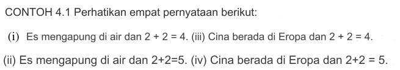
Hanya pernyataan (i) yang benar.
Penjelasan: Pada operasi konjungsi (\(\land\)), kedua bagian pernyataan kiri dan kanan harus bernilai benar. Pada opsi (i), kedua pernyataan matematika yang diberikan bernilai benar, sehingga hasil konjungsinya benar. Opsi lainnya memiliki setidaknya satu bagian yang salah.
Perhatikan pernyataan di bawah ini. Manakah pernyataan yang bernilai benar?
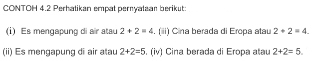
Hanya pernyataan terakhir (iv) yang bernilai salah. Semua pernyataan lainnya (i, ii, iii) benar.
Penjelasan: Pada operasi disjungsi (\(\lor\)), cukup salah satu bagian bernilai benar agar keseluruhan kalimat bernilai benar. Hanya pada pernyataan (iv) kedua proposisi di kiri dan kanan bernilai salah, sehingga hasilnya salah. Untuk pernyataan lainnya, minimal ada satu proposisi yang benar.
C. Exclusive OR (XOR)
XOR bernilai benar jika salah satu pernyataan bernilai benar, tetapi tidak boleh keduanya sekaligus. Simbolnya adalah \(\oplus\).
Contoh: "Untuk memenangkan hadiah utama, Anda harus memilih hadiah A atau (XOR) hadiah B, tetapi tidak boleh keduanya." Jika Putri mengambil hadiah A dan juga mengambil hadiah B, Putri melanggar aturan dan dianggap tidak memenangkan hadiah.
| \(p\) | \(q\) | \(p \oplus q\) |
|---|---|---|
| T | T | F |
| T | F | T |
| F | T | T |
| F | F | F |
D. Negasi / Ingkaran (¬)
Negasi digunakan untuk menyangkal suatu proposisi. Ia membalik nilai kebenaran: pernyataan benar menjadi salah, dan sebaliknya. Simbolnya adalah \(\neg\) atau \(\sim\).
Contoh Kalimat & Negasinya:
- Pernyataan: "Hari ini cuacanya cerah." → Negasi: "Hari ini cuacanya tidak cerah."
- Pernyataan: "Dia suka makan buah." → Negasi: "Dia tidak suka makan buah."
- Pernyataan: "Semua siswa lulus ujian." → Negasi: "Tidak semua siswa lulus ujian." (atau "Ada siswa yang tidak lulus ujian").
- Pernyataan: "Kucing itu sedang tidur." → Negasi: "Kucing itu tidak sedang tidur."
E. Implikasi / Pernyataan Kondisional (→)
Implikasi menyatakan hubungan sebab-akibat dengan format "Jika p maka q". Proposisi \(p\) disebut hipotesis (anteseden) dan \(q\) disebut konklusi (konsekuen). Simbolnya adalah \(\rightarrow\).
Prinsip Janji: Implikasi hanya akan bernilai SALAH jika anteseden (\(p\)) bernilai benar tetapi konsekuen (\(q\)) bernilai salah. Dalam situasi lainnya, implikasi selalu benar.
Contoh: "Jika hari ini hujan, maka jalanan basah." (\(p \rightarrow q\))
- Hujan (T) → Jalanan Basah (T): Ini bernilai Benar (T) karena sesuai kenyataan.
- Jalanan basah, tapi apakah pasti karena hujan? Tidak selalu. Bisa saja ada mobil pemadam menyiram jalanan. Jadi, implikasi bernilai satu arah. Kita tidak bisa menyimpulkan jika jalanan basah maka pasti hujan (\(q \rightarrow p\) belum tentu benar).
- Gak Hujan (F) → Jalanan Basah (T): Tetap bernilai Benar (T). Karena jika tidak hujan dan jalanan basah (misalnya disiram air), janji implikasi "jika hujan" tidak dilanggar.
- Hujan (T) → Jalanan Gak Basah (F): Bernilai Salah (F). Ini seperti mengingkari janji. Katanya kalau hujan, jalanan pasti basah. Tapi kenyataannya hujan dan jalanan kering.
| \(p\) | \(q\) | \(p \rightarrow q\) |
|---|---|---|
| T | T | T |
| T | F | F |
| F | T | T |
| F | F | T |
F. Biimplikasi / Biconditional (↔)
Biimplikasi menyatakan hubungan timbal balik dengan format "p jika dan hanya jika q". Simbolnya adalah \(\leftrightarrow\) atau \(\iff\).
Prinsip Ekuivalensi: Biimplikasi hanya akan bernilai BENAR jika kedua proposisi memiliki nilai kebenaran yang sama (keduanya benar atau keduanya salah).
Contoh: "Putra lulus ujian jika dan hanya jika ia belajar dengan baik."
- Jika Putra belajar dengan baik dan lulus, pernyataan bernilai Benar (T).
- Jika Putra tidak belajar dengan baik dan tidak lulus, pernyataan juga bernilai Benar (T).
- Jika Putra belajar baik tapi tidak lulus, atau tidak belajar tapi lulus, pernyataan bernilai Salah (F).
| \(p\) | \(q\) | \(p \leftrightarrow q\) |
|---|---|---|
| T | T | T |
| T | F | F |
| F | T | F |
| F | F | T |
G. Tautologi & Kontradiksi
- Tautologi: Pernyataan majemuk yang selalu bernilai benar untuk semua kemungkinan nilai kebenaran proposisi tunggalnya. Contoh: \(p \lor \neg p\) ("Saya pergi ke pesta atau saya tidak pergi").
- Kontradiksi: Pernyataan majemuk yang selalu bernilai salah untuk semua kemungkinan nilai kebenaran komponennya. Contoh: \(p \land \neg p\) ("Saya sedang tidur dan saya sedang tidak tidur").
2. Tabel Kebenaran (Compound Propositions)
Untuk proposisi majemuk yang kompleks, kita menggunakan tabel kebenaran untuk melacak nilai kebenaran di setiap langkah operasinya. Mari kita pelajari lewat latihan soal berikut.
Buatlah tabel kebenaran untuk ekspresi proposisi majemuk berikut: \(\neg(p \land \neg q)\)
Berikut adalah tabel kebenaran interaktif untuk \(\neg(p \land \neg q)\):
| \(p\) | \(q\) | \(\neg q\) | \(p \land \neg q\) | \(\neg(p \land \neg q)\) |
|---|---|---|---|---|
| T | T | F | F | T |
| T | F | T | T | F |
| F | T | F | F | T |
| F | F | T | F | T |
Berikut adalah visualisasi pengerjaan dari PDF (Cara 1 & Cara 2):
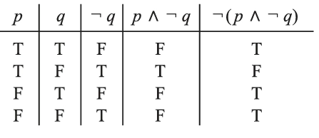
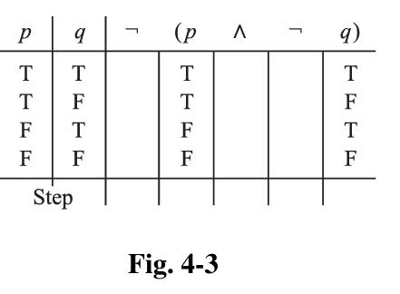
Buatlah tabel kebenaran untuk proposisi majemuk berikut: \((p \lor \neg q) \rightarrow (p \land q)\)
| \(p\) | \(q\) | \(\neg q\) | \(p \lor \neg q\) | \(p \land q\) | \((p \lor \neg q) \rightarrow (p \land q)\) |
|---|---|---|---|---|---|
| T | T | F | T | T | T |
| T | F | T | T | F | F |
| F | T | F | F | F | T |
| F | F | T | T | F | F |
Visualisasi pengerjaan dari PDF:
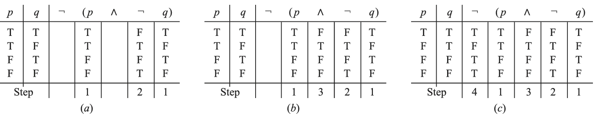
Buatlah tabel kebenaran untuk membuktikan argumen transitif implikasi: \([(p \rightarrow q) \land (q \rightarrow r)] \rightarrow (p \rightarrow r)\) (Jika \(p\) menyiratkan \(q\), dan \(q\) menyiratkan \(r\), maka \(p\) menyiratkan \(r\)).
Karena terdapat 3 variabel (\(p, q, r\)), maka tabel kebenaran memiliki \(2^3 = 8\) baris:
| \(p\) | \(q\) | \(r\) | \(p \rightarrow q\) | \(q \rightarrow r\) | Konjungsi (\(\land\)) | \(p \rightarrow r\) | Hasil Akhir |
|---|---|---|---|---|---|---|---|
| T | T | T | T | T | T | T | T |
| T | T | F | T | F | F | F | T |
| T | F | T | F | T | F | T | T |
| T | F | F | F | T | F | F | T |
| F | T | T | T | T | T | T | T |
| F | T | F | T | F | F | T | T |
| F | F | T | T | T | T | T | T |
| F | F | F | T | T | T | T | T |
Karena seluruh baris pada kolom hasil akhir bernilai True, maka ekspresi ini terbukti merupakan sebuah Tautologi.
Visualisasi tabel kebenaran dari PDF:
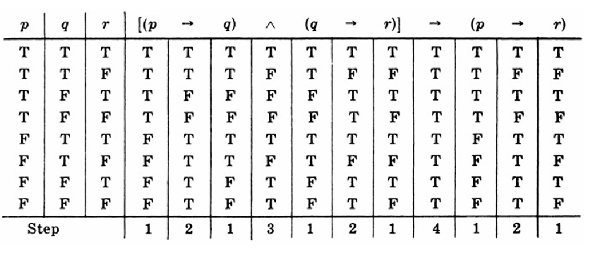
3. Ekuivalensi Logika (Logical Equivalence Laws)
Dua pernyataan majemuk dikatakan ekuivalen secara logika (ditulis \(\equiv\) atau \(\iff\)) jika keduanya memiliki nilai kebenaran yang sama pada seluruh baris tabel kebenarannya. Kita bisa membuktikannya menggunakan tabel kebenaran atau dengan menerapkan hukum-hukum logika.
Hafalkan dan pahami hukum-hukum aljabar proposisi berikut untuk menyederhanakan ekspresi logika:
Buktikan secara aljabar (menggunakan hukum-hukum logika) bahwa \(\neg(p \rightarrow q)\) ekuivalen dengan \(p \land \neg q\).
Langkah-langkah penyederhanaan aljabar logika:
Terbukti!
Visualisasi catatan pengerjaan dari PDF:
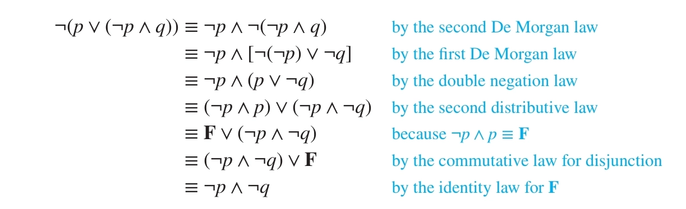
Buktikan secara aljabar bahwa \(\neg(p \lor (\neg p \land q))\) ekuivalen secara logis dengan \(\neg p \land \neg q\).
Langkah-langkah penyederhanaan aljabar logika:
Terbukti!
Visualisasi catatan pengerjaan dari PDF:
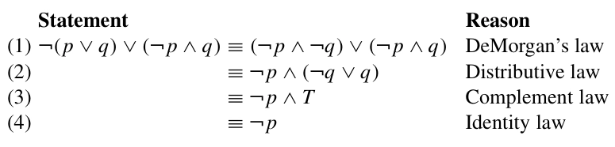
Buktikan secara aljabar bahwa \(\neg(p \lor q) \lor (\neg p \land q) \equiv \neg p\).
Langkah-langkah penyederhanaan:
Terbukti!
Visualisasi catatan pengerjaan dari PDF:
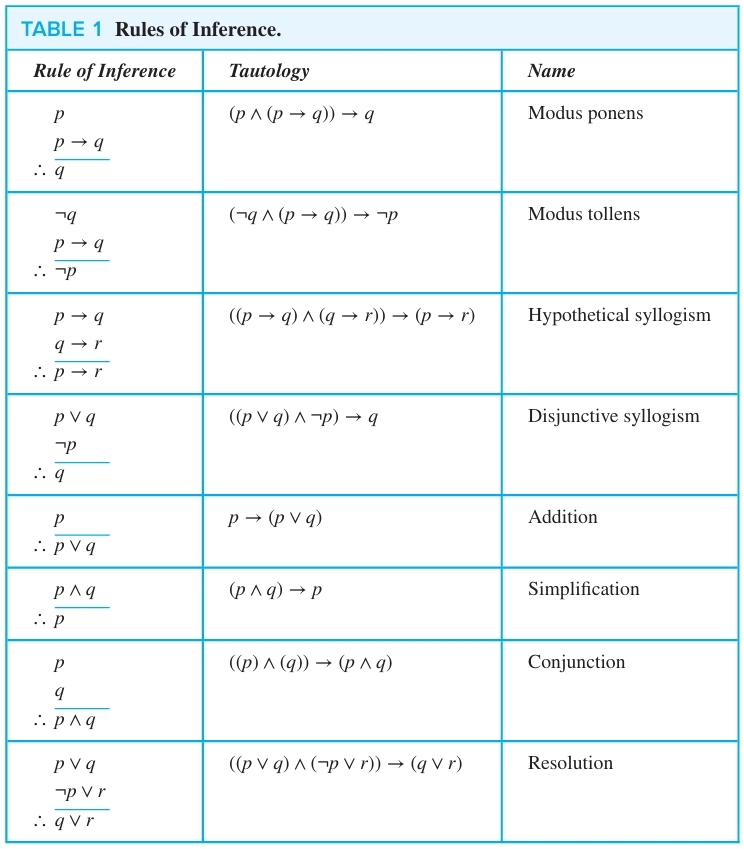
4. Rules of Inference (Aturan Inferensi)
Rules of Inference adalah pola argumen logis yang digunakan sebagai langkah penarikan kesimpulan secara valid dari premis-premis yang diberikan.
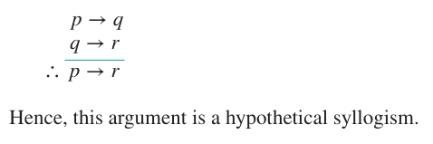
Tentukan aturan inferensi mana yang digunakan dalam argumen berikut:
"Jika hari ini hujan, maka kita tidak akan mengadakan pesta barbekyu hari ini. Jika kita tidak mengadakan pesta barbekyu hari ini, maka kita akan mengadakan pesta barbekyu besok. Oleh karena itu, jika hari ini hujan, maka kita akan mengadakan pesta barbekyu besok."
Aturan inferensi yang digunakan adalah Hypothetical Syllogism (Silogisme Hipotetis).
Representasi simbolis:
Misalkan:
\(p\): Hari ini hujan.
\(q\): Kita tidak mengadakan pesta barbekyu hari ini.
\(r\): Kita mengadakan pesta barbekyu besok.
Premis 1: \(p \rightarrow q\)
Premis 2: \(q \rightarrow r\)
Kesimpulan: \(p \rightarrow r\)
Ini persis sesuai dengan rumus Hypothetical Syllogism: \([(p \rightarrow q) \land (q \rightarrow r)] \rightarrow (p \rightarrow r)\).
Buktikan bahwa premis-premis berikut menghasilkan kesimpulan "Kita akan sampai rumah saat matahari terbenam."
- "Cuaca tidak cerah sore ini dan lebih dingin dari kemarin."
- "Kita akan berenang hanya jika cuaca cerah."
- "Jika kita tidak berenang, maka kita akan naik kano."
- "Jika kita naik kano, maka kita akan sampai rumah saat matahari terbenam."
Langkah 1: Definisikan Proposisi Atomik
- \(p\): Cuaca cerah sore ini.
- \(q\): Lebih dingin dari kemarin.
- \(r\): Kita akan berenang.
- \(s\): Kita akan naik kano.
- \(t\): Kita akan sampai rumah saat matahari terbenam.
Langkah 2: Tulis Premis Secara Simbolis
- \(\neg p \land q\)
- \(r \rightarrow p\) (Catatan: "Berenang HANYA JIKA cuaca cerah" berarti jika berenang maka cuaca cerah).
- \(\neg r \rightarrow s\)
- \(s \rightarrow t\)
Langkah 3: Lakukan Inferensi Logis
| Langkah | Pernyataan | Alasan |
|---|---|---|
| 1 | \(\neg p \land q\) | Premis 1 |
| 2 | \(\neg p\) | Simplifikasi dari Langkah 1 |
| 3 | \(r \rightarrow p\) | Premis 2 |
| 4 | \(\neg r\) | Modus Tollens dari Langkah 2 & 3 |
| 5 | \(\neg r \rightarrow s\) | Premis 3 |
| 6 | \(s\) | Modus Ponens dari Langkah 4 & 5 |
| 7 | \(s \rightarrow t\) | Premis 4 |
| 8 | \(t\) | Modus Ponens dari Langkah 6 & 7 |
Dengan demikian, kesimpulan \(t\) ("Kita akan sampai rumah saat matahari terbenam") terbukti secara logis!
Visualisasi catatan pengerjaan dari PDF:
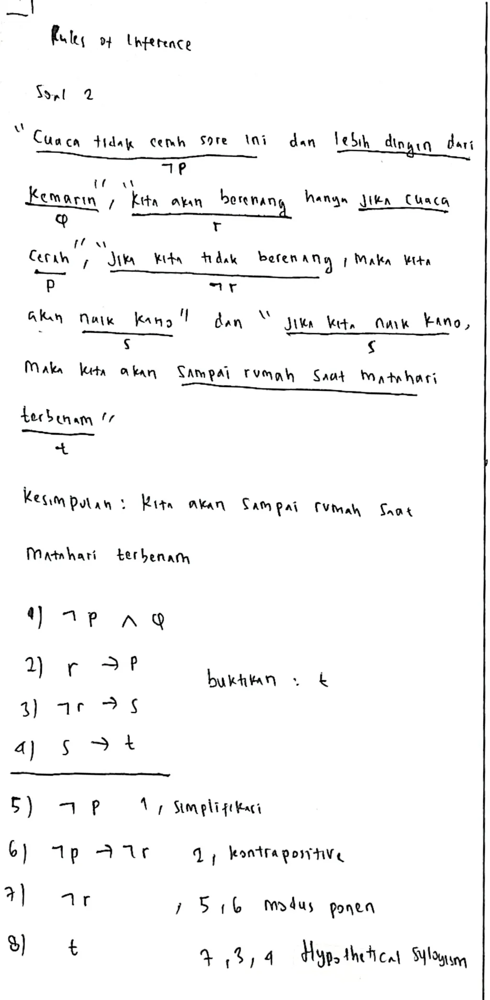
Buktikan bahwa premis-premis berikut menghasilkan kesimpulan "Jika saya tidak menyelesaikan coding, maka saya akan bangun dengan perasaan segar."
- "Jika Anda mengirimi saya pesan email, maka saya akan menyelesaikan coding."
- "Jika Anda tidak mengirimi saya pesan email, maka saya akan tidur lebih awal."
- "Jika saya tidur lebih awal, maka saya akan bangun dengan perasaan segar."
Langkah 1: Definisikan Proposisi
- \(p\): Anda mengirimi saya email.
- \(q\): Saya akan menyelesaikan coding.
- \(r\): Saya tidur lebih awal.
- \(s\): Saya bangun dengan perasaan segar.
Langkah 2: Tulis Premis
- \(p \rightarrow q\)
- \(\neg p \rightarrow r\)
- \(r \rightarrow s\)
Kesimpulan yang dicari: \(\neg q \rightarrow s\)
Langkah 3: Bukti
- \(p \rightarrow q \equiv \neg q \rightarrow \neg p\) (Kontraposisi dari Premis 1)
- \(\neg p \rightarrow r\) (Premis 2)
- \(\neg q \rightarrow r\) (Hypothetical Syllogism dari langkah 1 dan 2)
- \(r \rightarrow s\) (Premis 3)
- \(\neg q \rightarrow s\) (Hypothetical Syllogism dari langkah 3 dan 4)
Terbukti!
Visualisasi catatan pengerjaan dari PDF:
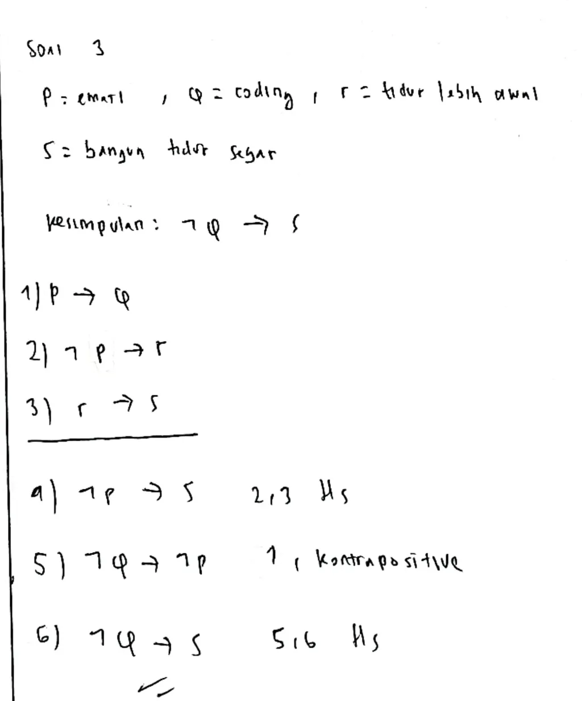
Gunakan prinsip Resolution untuk menunjukkan bahwa premis-premis berikut:
- "Jasmine sedang bermain ski atau tidak turun salju."
- "Sedang turun salju atau Bart sedang bermain hoki."
Menyiratkan kesimpulan: "Jasmine sedang bermain ski atau Bart sedang bermain hoki."
Definisi Proposisi:
- \(p\): Jasmine bermain ski.
- \(q\): Turun salju.
- \(r\): Bart bermain hoki.
Premis Secara Simbolis:
- \(p \lor \neg q\)
- \(q \lor r\)
Aturan Resolusi:
Berdasarkan aturan resolusi, jika kita memiliki bentuk \((A \lor B)\) dan \((\neg B \lor C)\), maka kita bisa mengeliminasi \(B\) dan \(\neg B\) untuk menyimpulkan \((A \lor C)\).
Maka dari:
\(p \lor \neg q\)
\(\neg q \lor p\) (Komutatif)
dan \(q \lor r\)
Didapatkan resolusi: \(p \lor r\) (Jasmine bermain ski atau Bart bermain hoki).
Visualisasi catatan pengerjaan dari PDF:
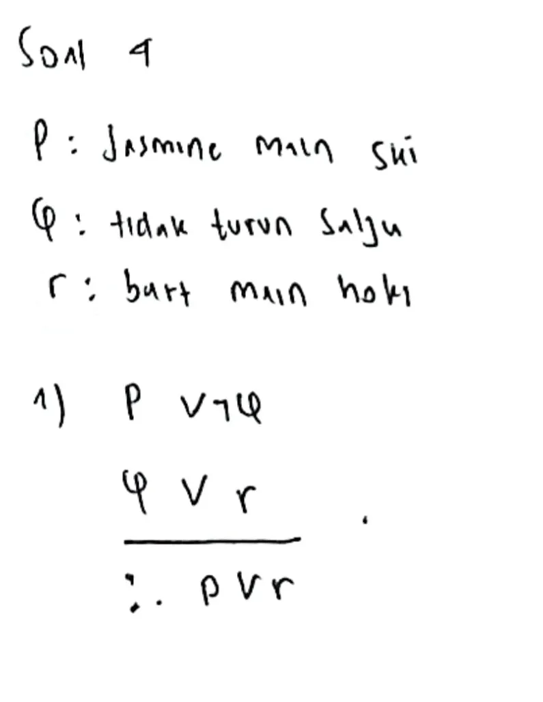
5. Aljabar Boolean & Gerbang Logika
Aljabar Boolean memiliki struktur operasi yang identik dengan logika proposisi. Bedanya terletak pada simbolisasi nilai dan operator yang digunakan.
- True (Benar) digantikan dengan angka 1.
- False (Salah) digantikan dengan angka 0.
- Operasi AND (\(\land\)) digantikan dengan perkalian (\(\times\) atau \(\cdot\)).
- Operasi OR (\(\lor\)) digantikan dengan penjumlahan (\(+\)).
- Operasi Negasi (\(\neg x\)) digantikan dengan komplemen/bar (\(\bar{x}\) atau \(x'\)).
Buktikan hukum penyerapan dan distributif pada aljabar Boolean menggunakan pembuktian nilai 1 & 0.
Berikut adalah catatan coretan pembuktian dari PDF:
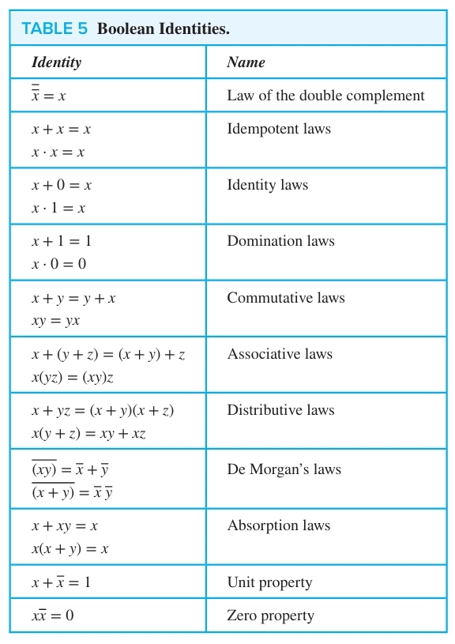
Sum of Product (SOP) / Bentuk Normal Disjungtif (DNF)
SOP adalah representasi ekspresi Boolean sebagai jumlahan (OR) dari perkalian-perkalian (AND) variabel. Setiap suku perkalian disebut minterm, di mana seluruh variabel muncul tepat sekali (baik dalam bentuk normal maupun komplemen).
Temukan ekspresi Boolean dalam bentuk Sum of Product (SOP) untuk fungsi \(F(x,y,z)\) dan \(G(x,y,z)\) yang nilainya didefinisikan dalam tabel berikut:
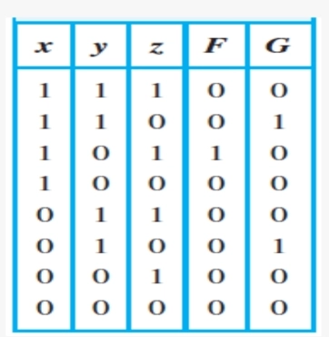
Langkah Pengerjaan:
Untuk menulis ekspansi SOP, kita hanya fokus pada baris tabel di mana output fungsi bernilai 1. Setiap baris tersebut kita nyatakan sebagai minterm (AND):
- Jika variabel bernilai 1, tulis tanpa komplemen (contoh: \(x\)).
- Jika variabel bernilai 0, tulis dengan komplemen (contoh: \(\bar{x}\) atau \(x'\)).
Kemudian kita gabungkan seluruh minterm tersebut dengan operasi penjumlahan (OR).
Fungsi \(F(x,y,z)\): bernilai 1 pada baris:
- \(x=1, y=0, z=1 \rightarrow x \bar{y} z\)
- \(x=0, y=1, z=0 \rightarrow \bar{x} y \bar{z}\)
Maka SOP \(F(x,y,z) = x \bar{y} z + \bar{x} y \bar{z}\).
Fungsi \(G(x,y,z)\): lakukan analisis yang sama untuk semua baris bernilai 1.
Berikut adalah lembar jawaban lengkap dari PDF:
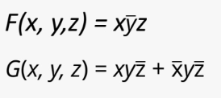
Temukan perluasan sum-of-product (SOP) dari fungsi Boolean \(F(x,y,z) = (x+y)\bar{z}\).
Metode Aljabar:
1. Gunakan hukum distributif untuk mengalikan suku:
\(F(x,y,z) = x\bar{z} + y\bar{z}\)
2. Kalikan setiap suku dengan \((w + \bar{w})\) dari variabel yang hilang agar menjadi minterm lengkap (karena \(w + \bar{w} = 1\)):
- Pada suku \(x\bar{z}\), variabel \(y\) hilang. Kalikan dengan \((y + \bar{y})\):
\(x\bar{z}(y + \bar{y}) = xy\bar{z} + x\bar{y}\bar{z}\)
- Pada suku \(y\bar{z}\), variabel \(x\) hilang. Kalikan dengan \((x + \bar{x})\):
\(y\bar{z}(x + \bar{x}) = xy\bar{z} + \bar{x}y\bar{z}\)
3. Jumlahkan seluruh suku dan buang suku duplikat (menggunakan hukum idempoten):
\(F(x,y,z) = xy\bar{z} + x\bar{y}\bar{z} + \bar{x}y\bar{z}\)
Visualisasi penyelesaian dan metode alternatif dari PDF:
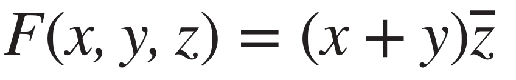
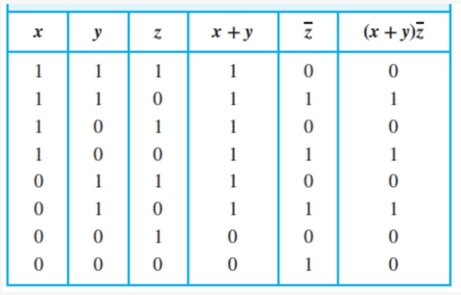
Gerbang Logika (Logic Gates)
Gerbang logika adalah representasi fisik/sirkuit digital dari fungsi logika dasar. Ada 3 gerbang utama:
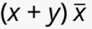
Buatlah rancangan sirkuit gerbang logika untuk fungsi Boolean berikut: \(F(x,y,z) = x + y\bar{z}\)
Untuk membuat sirkuit ini:
- Masukkan \(z\) ke gerbang NOT (Inverter) untuk menghasilkan \(\bar{z}\).
- Masukkan hasil \(\bar{z}\) dan input \(y\) ke gerbang AND untuk menghasilkan perkalian \(y\bar{z}\).
- Terakhir, masukkan hasil \(y\bar{z}\) dan input \(x\) ke gerbang OR untuk mendapatkan penjumlahan \(x + y\bar{z}\).
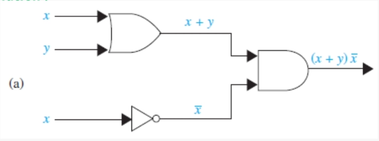
Buatlah rancangan sirkuit gerbang logika untuk fungsi Boolean berikut: \(F(x,y,z) = (x+y)\bar{z}\)
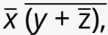
Tentukan output ekspresi Boolean dari sirkuit gerbang logika berikut:
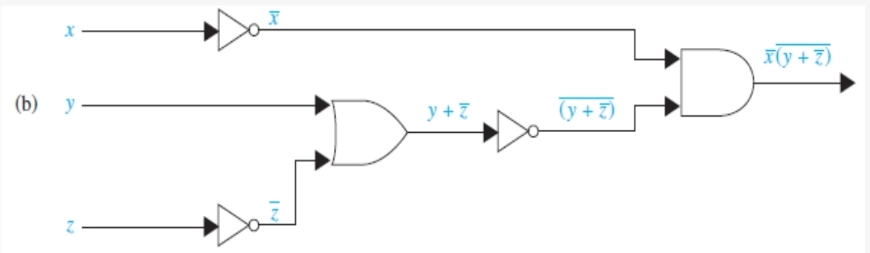
Lakukan pelacakan jalur output dari kiri ke kanan:
- Jalur atas menghasilkan \(\bar{x}y\) melalui gerbang NOT dan AND.
- Jalur bawah menghasilkan \(x\bar{y}\) melalui gerbang NOT dan AND.
- Kedua jalur digabungkan ke gerbang OR menghasilkan output akhir: \(\bar{x}y + x\bar{y}\) (ini merupakan operasi XOR!).
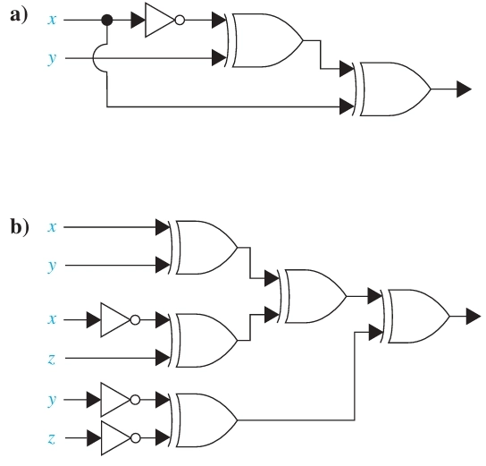
6. Karnaugh Map (K-Map)
Karnaugh Map (K-Map) adalah metode grafis yang sangat kuat untuk menyederhanakan ekspresi aljabar Boolean (atau meminimalisasi jumlah gerbang logika dalam sirkuit).
- Cover semua area: Semua kotak bernilai 1 harus masuk ke dalam kelompok (loop).
- Cover area seluas mungkin: Buat kelompok sebesar mungkin untuk mendapatkan hasil penyederhanaan paling sederhana.
- Ukuran kelompok harus \(2^n\): Jumlah kotak dalam satu kelompok harus bernilai 1, 2, 4, 8, atau 16 kotak. Tidak boleh membuat kelompok berukuran 3, 5, atau 6 kotak.
- Tumpang tindih (Overlap) diperbolehkan: Kotak bernilai 1 yang sudah dikelompokkan boleh digunakan lagi untuk membantu mengelompokkan kotak 1 lainnya agar terbentuk kelompok yang lebih besar.
- Hafalkan polaGray Code: Urutan baris/kolom harus mengikuti Gray Code (00 → 01 → 11 → 10). Perhatikan lompatan kolom 3 dan 4!
K-Map 2 Variabel
Memiliki \(2^2 = 4\) sel kotak. Penyederhanaan terjadi jika dua kotak bernilai 1 yang bersebelahan digabungkan, sehingga satu variabel saling meniadakan.
Carilah minimal sum-of-product dari complete sum-of-product ekspresi Boolean berikut:
(a) \(E_1 = xy + xy'\)
(b) \(E_2 = xy + x'y + x'y'\)
(c) \(E_3 = xy + x'y'\)
(a) Analisis \(E_1\):
Kita petakan suku \(xy\) dan \(xy'\) ke peta. Kedua kotak ini bersebelahan secara horizontal. Penggabungan kedua kotak ini mengeliminasi variabel \(y\) (karena \(y\) dan \(y'\) bernilai berlawanan), menyisakan \(x\).
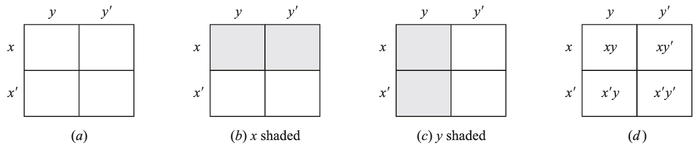
(b) Analisis \(E_2\):
Kelompok vertikal mewakili \(y\) (mengeliminasi \(x\)) dan kelompok horizontal mewakili \(x'\) (mengeliminasi \(y\)). Gabungan keduanya menghasilkan minimal sum: \(x' + y\).
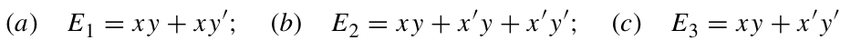
(c) Analisis \(E_3\):
Kedua kotak terletak diagonal, tidak bersebelahan secara horizontal maupun vertikal. Tidak ada pengelompokan yang dapat dibentuk. Maka ekspresi minimalnya tetap: \(xy + x'y'\).
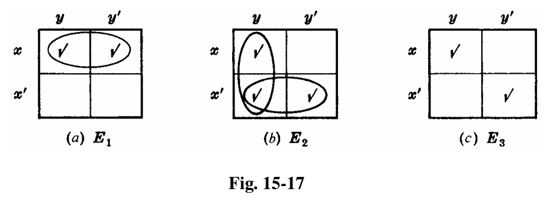
K-Map 3 Variabel
Memiliki \(2^3 = 8\) sel kotak. Bayangkan peta ini seperti tabung silinder yang dapat dilipat secara horizontal ke samping, artinya tepi kolom paling kiri (kolom 00) bersebelahan langsung dengan tepi kolom paling kanan (kolom 10).
Tentukan hasil (fundamental product) \(P\) dari daerah arsiran yang dipresentasikan dengan loop/lingkaran pada K-Map di bawah ini:
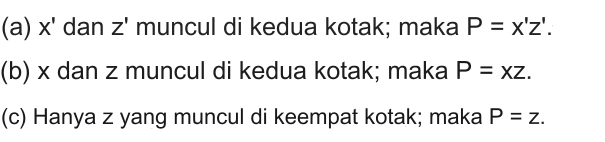
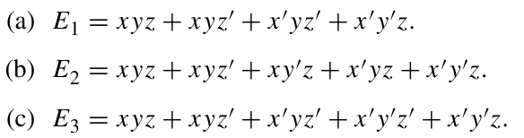
Carilah minimal sum-of-product dari complete sum-of-product ekspresi Boolean di bawah ini:
(a) \(E_1 = xy + yz' + x'y'z\)
(b) \(E_2 = xy + z\)
(c) \(E_3 = xy + y'z' + x'y' = xy + x'z' + x'y'\)
(a) Analisis \(E_1\):
Peta memiliki 3 loop utama maksimal yang mencakup daerah arsiran. Menghasilkan penjumlahan minimal: \(E_1 = xy + yz' + x'y'z\).
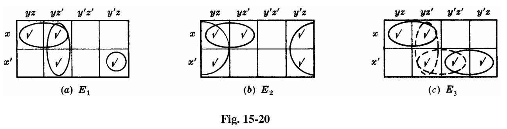
(b) Analisis \(E_2\):
Kotak berukuran 2x2 (empat sel) terbentuk di tepi silinder yang teridentifikasi, mewakili \(z\). Kotak horizontal lainnya mewakili \(xy\). Hasil minimal: \(E_2 = xy + z\).
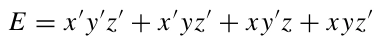
(c) Analisis \(E_3\):
Mempunyai beberapa alternatif pembentukan loop minimal. Salah satunya menghasilkan: \(E_3 = xy + y'z' + x'y' = xy + x'z' + x'y'\).
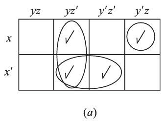
Carilah minimal sum-of-product untuk beberapa tipe soal latihan 3 variabel berikut:
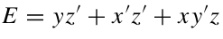
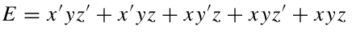
K-Map 4 Variabel
Memiliki \(2^4 = 16\) sel kotak. Pada K-Map 4 variabel, peta dapat dilipat secara horizontal (ke samping) sekaligus secara vertikal (ke atas-bawah).
Keempat kotak di ujung sudut (kiri-atas, kanan-atas, kiri-bawah, kanan-bawah) dianggap saling bersebelahan dan dapat digabungkan menjadi satu grup kelompok berukuran 4 kotak!
Tentukan hasil (fundamental product) \(P\) dari daerah arsiran yang dipresentasikan dengan loop persegi panjang pada K-Map 4 variabel di bawah ini:
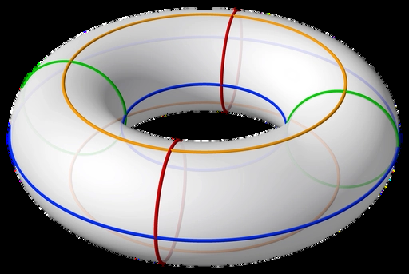
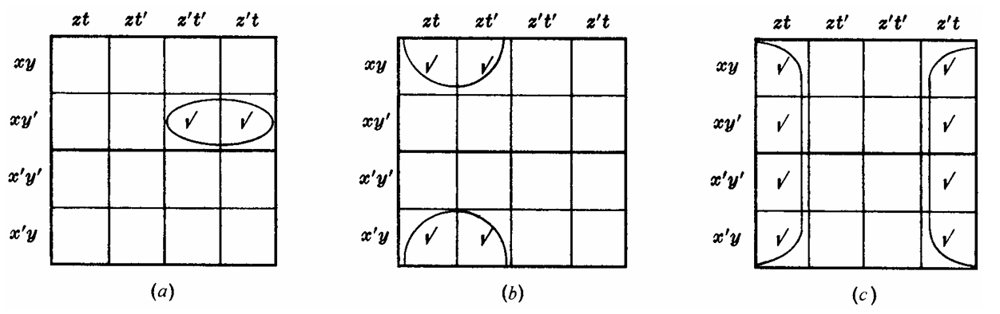
Gunakan K-Map untuk menyederhanakan ekspresi Boolean yang diberikan, kemudian rancang sirkuit gerbang logikanya!
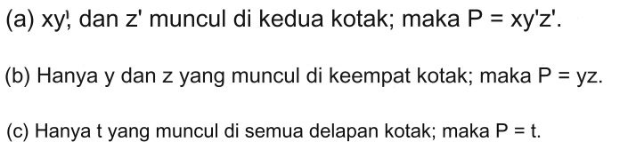
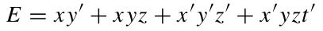
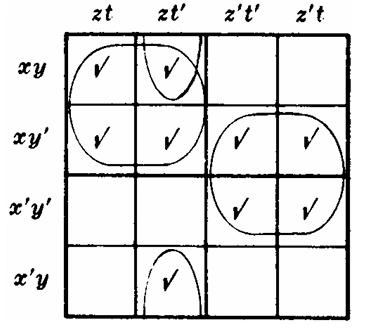
Tentukan hasil (fundamental product) \(P\) dari daerah arsiran yang dipresentasikan dengan persegi panjang pada peta Karnaugh di bawah ini:
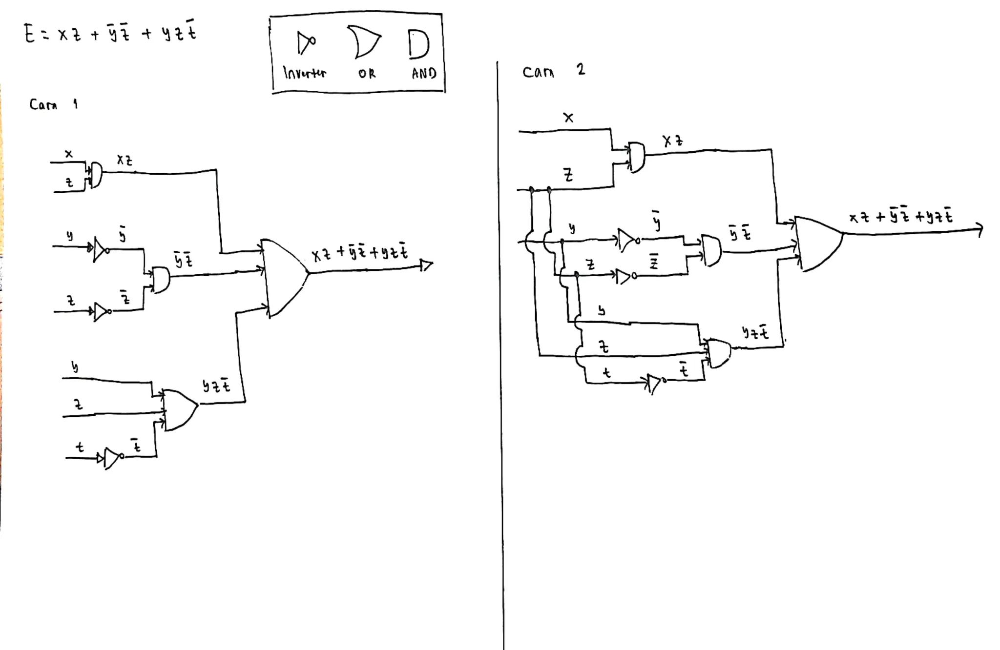
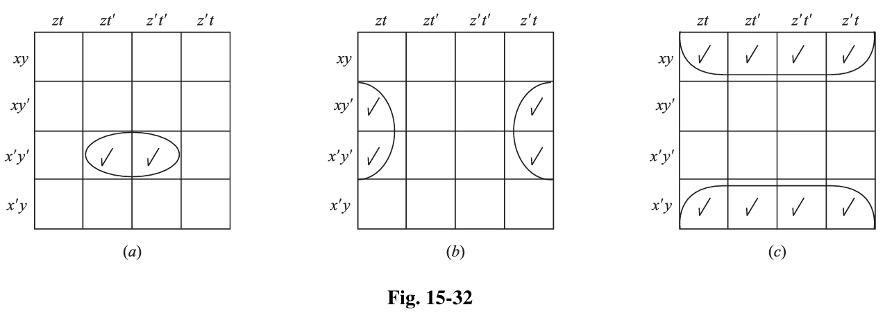
Misalkan \(E\) adalah ekspresi Boolean yang diberikan dalam pemetaan Karnaugh di bawah ini:
- Tulis \(E\) dalam bentuk jumlah produk lengkapnya (complete sum-of-product).
- Temukan bentuk minimal (minimal form) untuk \(E\).
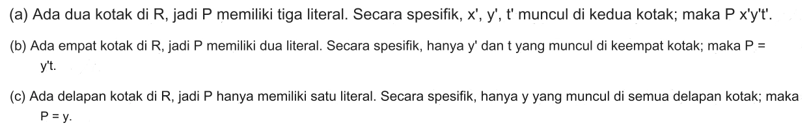
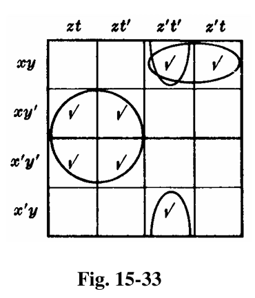
Carilah jumlah minimum (minimal-sum) untuk ekspresi Boolean \(E_1\) dan \(E_2\) pada variabel \(x, y, z, t\) yang diberikan dalam pemetaan K-Map berikut:
(a) Analisis \(E_1\):
Hanya \(\bar{y}\) yang muncul di semua delapan kotak persegi panjang dasar maksimal 2x4, dan pasangan kotak bersebelahan yang ditunjuk mewakili \(xzt'\). Karena kedua persegi panjang diperlukan untuk penutup minimal, maka:
(b) Analisis \(E_2\):
Keempat kotak sudut membentuk persegi panjang dasar maksimal 2x2 yang mewakili \(\bar{y}\bar{t}\) (atau ditulis sebagai \(yt'\) pada sistem komplemen tertentu). Kotak maksimal 4x1 mewakili \(\bar{x}\bar{y}\), dan dua kotak bersebelahan mewakili \(\bar{y}zt'\). Karena ketiga persegi panjang diperlukan untuk penutup minimal, maka diperoleh bentuk minimalnya.
Berikut adalah peta soal dan catatan kunci jawaban dari PDF:
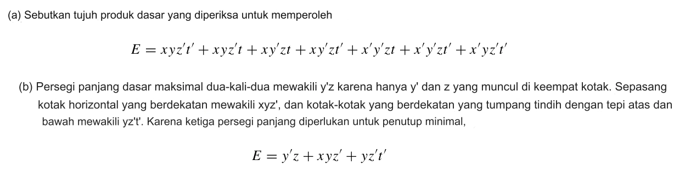
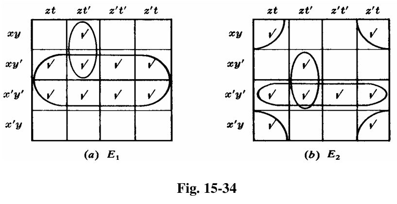
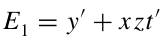
Carilah jumlah minimum (minimal-sum) untuk ekspresi Boolean \(E_1\) dan \(E_2\) pada variabel \(x, y, z, t\) yang diberikan oleh pemetaan Karnaugh di bawah ini:
(a) Analisis \(E_1\):
Terdapat lima implikan prima yang ditunjuk oleh empat loop dan satu lingkaran putus-putus. Lingkaran putus-putus tidak diperlukan untuk menutupi semua kotak, sedangkan empat loop lainnya wajib. Maka keempat loop tersebut memberikan jumlah minimum untuk \(E_1\).
(b) Analisis \(E_2\):
Terdapat lima implikan prima yang ditunjuk oleh lima loop (dua di antaranya putus-putus). Hanya satu dari dua loop putus-putus yang diperlukan untuk menutupi kotak \(\bar{x}\bar{y}\bar{z}\bar{t}\), sehingga didapatkan dua buah jumlah minimal alternatif yang valid.
Berikut adalah catatan kunci jawaban dari PDF:
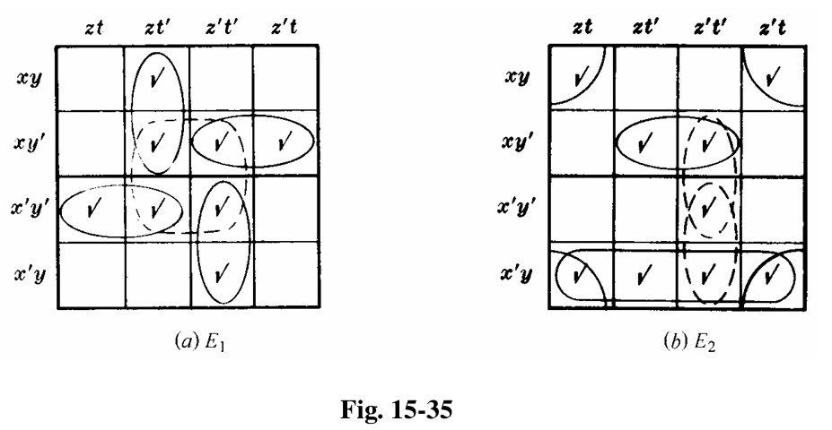
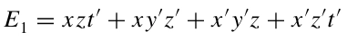
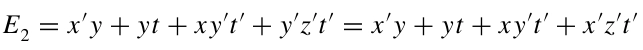
Sederhanakan ekspresi K-Map 4 variabel berikut ini untuk mendapatkan bentuk minimalnya:
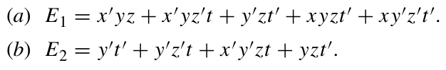
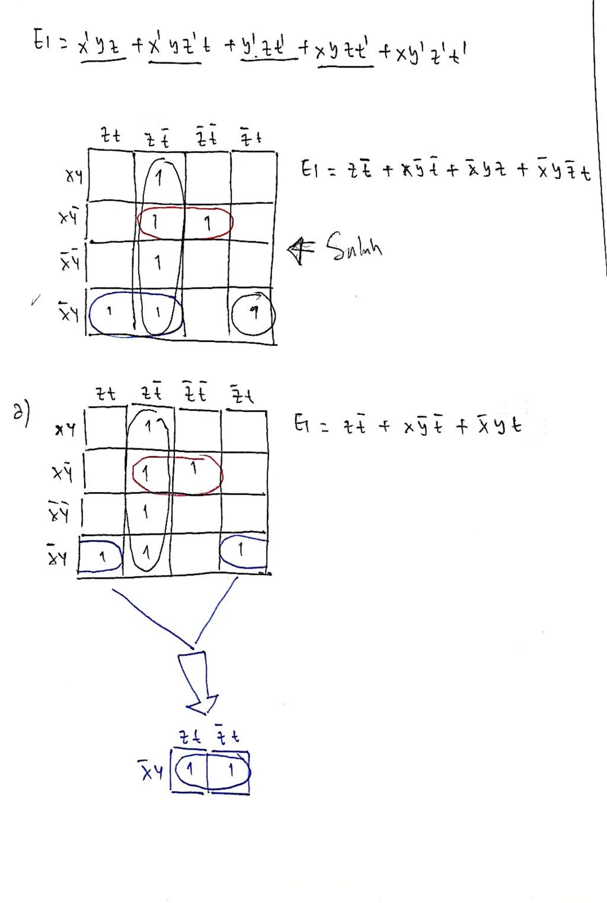